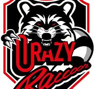

Players
Brawl Stars has different types of players that range through skill levels.
The average player is non-competitive and most likely plays from time to time,
while some others see Brawls Stars as a job. A competitive player that participates
in finals, such as Monthly Finals or World Finals, are able to win cash prizes
through being rewarded. Some competitive players are recognized by most people
Because of their victories and/or high skill levels.
 Crazy Raccoons is a professional brawl stars team who competes. Currently they are the winners of the 2020 and 2021 World Finals. The most famous player is Tensai.